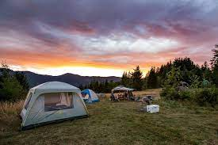
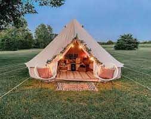

We have been guiding rafters down the Wyoming river for 6 decades. The key to our success is we know how to offer the experience everyone is looking for. We have the great mix of smooth and easy with enough splash to give a thrill. To hold on tight and paddle hard to make it over some killer rapids. So all that come go home with the experience they in mind and are happy they came. We also have the state of the art equipment to keep you safe and coming back for more.
Not only do we accomidate rafting trips but we have in vested in some great camping venues. We now have 3 different camping areas so accomidate all our visitors so they can stay close. We have our home base camp ground right outside the head of all our trails. Then we have 3 other camp sites available for customers on the three day river rides or if available for those just looking for a great camp experience next to the river. We have bring your own gear sights and a limited amount of rental gear campsites.
Camping is not really your thing but you love the outdoors we have you covered as well. We just added a glamping pad to each of our campgrounds. This is for those that want to camp in style. We have 4 camp sites new and comfy. These yurts are completly powered and have a/c or heat. They are fully furnished. They include a mini fridge and microwave. After a long day on the river you will find youself kicking up your feel and relaxing inside a top of the line glamping experience. Almost like your were transformed back to your own bed.